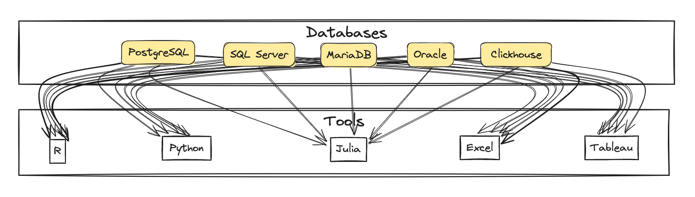
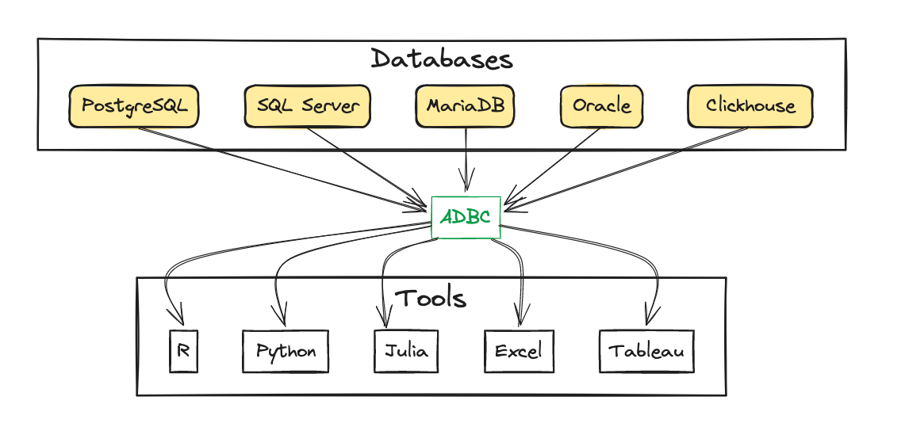

Using Arrow for data transport
The third and final blog post dives deeply into the new Arrow Database Connectivity (ADBC) project and the adbcdrivermanager package, which provides a common interface for database access across ecosystems, using the Arrow data format as the common data exchange format. It also showcases the adbi package, which bridges ADBC drivers and DBI, enabling existing code that uses DBI to seamlessly interact with the new ADBC drivers.
This is a continuation of the first and second blog post in this series.
A new database standard?
The DBI package offers consistent database access in R. Different database systems, such as PostgreSQL, MySQL, SQLite, and others, can be accessed through a common interface. To access a particular database, a driver package is required, such as RMariaDB, RPostgres, or RSQLite. These driver packages implement the DBI interface and bind to the database system’s native client library, such as Connector/C for MariaDB or libpq for PostgreSQL. A common interface is essential for users who want to switch between database systems or who want to use different database systems in the same project. Similar efforts exist in other ecosystems, such as Python’s DB-API 2.0. When considering the bigger picture, providing access to all databases for all ecosystems looks like this:

Each line represents a software package to develop and maintain, following changes in the database system and the target ecosystem. And, of course, the list of databases and ecosystems is not exhaustive. With every new system, many more connections need to be established. A daunting task!
This is where the ADBC project comes in. The Arrow Database Connectivity project aims to provide a common interface for database access across ecosystems, using the Arrow data format as the common data exchange format. Now, the big picture is greatly simplified:

This isn’t an entirely new idea. ODBC (Open Database Connectivity) and JDBC (Java Database Connectivity) have been around for a long time, with very similar goals. The new implementation can build on the lessons learned from these projects. The standardization on the Arrow data format is a significant advantage:
Most data types typically supported by databases are supported directly, and the format is extensible.
The same data format can be used across ecosystems, avoiding conversions and copies.
Arrow is designed for high performance, with zero-copy data sharing between systems, with good support for both columnar and row-oriented data processing.
With FlightSQL, the same data format can be used for data exchange between client and server, avoiding serialization and deserialization.
Like with ODBC, an ADBC driver is a shared library that can be loaded into any ecosystem. In addition, ADBC drivers can be tightly coupled with the target system, allowing to cover database-specific functionality that is not part of ADBC. An example is adbcpostgresql, which provides access to PostgreSQL-specific features: it exists as a standalone C library, as an R package (essentially vendoring the C library with some very lightweight boilerplate), as a Python package, and for many other target ecosystems. This greatly simplifies the installation and configuration of the driver.
For R, the main entry point is the adbcdrivermanager package. It provides the glue between R and the ADBC drivers. Because all ADBC drivers use the same Arrow data format, the adbcdrivermanager package can focus on the common functionality, such as connection management, query execution, and data retrieval. The adbcpostgresql package imports the adbcdrivermanager package and provides the PostgreSQL-specific functionality.
The adbi package
Because ADBC is a new project, it doesn’t yet cover all databases and ecosystems. To simplify the transition, the adbi package bridges ADBC drivers and DBI, enabling existing code that uses DBI to seamlessly interact with the new ADBC drivers. Thanks to Voltron Data for the collaboration on this project and for the support in developing the adbi package and the DBI extension.
The adbi package is available on CRAN and provides the following features:
Access to ADBC drivers through the DBI interface.
Data retrieval as data frames or Arrow, side by side, on the same connection object, using the new generics defined by DBI.
Using ADBC through adbi will not improve performance, but it will facilitate the switch to using Arrow as a data interchange format. Similarly, the DBI package provides a default implementation for the new Arrow generics, which is not optimized for performance but can be used to directly convert data provided by DBI backends to Arrow. However, by using adbi with the new DBI generics such as dbGetQueryArrow() or dbFetchArrow(), the data is never converted to a data frame, and the Arrow data format is used directly. See the relevant section in the first blog post for an example using PostgreSQL.
Reimagining DBI
The dbi3 repository contains little but an issue tracker and a few scripts. The issues were moved from the various repositories in the r-dbi organization to be picked up for a reimagining of the database interface. With the new ADBC standard and the adbi package, it seemed worthwhile to revisit the responsibilities of a database interface in R.
The README now contains a categorization of the issues. It turns out that a good third of the issues can now be easily solved with ADBC and the adbcdrivermanager package, or a solution on top of ADBC/adbcdrivermanager is the best way to go. A few issues seem to belong in other packages such as dbplyr or dm. The remaining issues, again about a third, are not actionable at this time. The resolution depends on whether the ADBC project will be successful and whether the R community will adopt it. To clear this path, DBI will keep and improve compatibility with ADBC and adbi.
To bring adbcdrivermanager on par with DBI, a few issues need to be addressed:
SQL generation: can dbplyr be connected to ADBC, either directly or via adbi?
Usability: the adbcdrivermanager package looks more like an “implementer’s interface”, a convenience “user’s interface” wrapper or extension might make it easier to use. More on that below.
Test suite: should a test package similarly to DBItest be created?
Interoperability with existing DBI backends: can a generic ADBC driver be created so that any existing DBI backend can be used with ADBC? A prime candidate would be the odbc package, this would add support for all ODBC drivers to ADBC via R, until a native ADBC driver is available.
Documentation: the ADBC standard is well-documented, but the documentation specific to the R ecosystem could be expanded.
Bindings, database, user interface
Let’s step back a little to better understand the responsibilities of DBI and the various other components. What is core functionality, what can be provided by addon packages, and what use cases should be left for the end user to implement?
As an R user, I need to:
connect to our database
read a table from our database
run this query on our database
write my data to our database
create a new table in our database
I might also need to:
write complex queries that involve multiple tables
review and manage the tables in our database
access a database from a Shiny app
The adbcdrivermanager package with the ADBC drivers tick almost all boxes from the “I need to” list, but none of the boxes from the “I might also need to” list. It does so by focusing on the following functionality:
simple connect and disconnect based on credentials
data type mapping between Arrow and the native database driver
data transfer in both directions
emission of queries, with support for placeholders
reporting success or failure of queries and other operations
This shows a good separation of concerns: the adbcdrivermanager package provides the core functionality (“bindings”), and other code can build on top of that to provide more advanced features (“user interface”).
The bindings alone are not enough to provide a good user experience. As an example, there are now several ways to access a PostgreSQL database from R:
Use the RPostgres or RPostgreSQL packages, which provide a DBI backend for PostgreSQL.
Use the adbcpostgresql package, which provides an ADBC driver for PostgreSQL.
Use the adbi package, which provides a DBI backend for ADBC that allows accessing PostgreSQL through its ADBC driver.
Use the odbc package, which provides a DBI backend for ODBC that allows accessing PostgreSQL through an ODBC driver.
In the past, “database driver” and “database” were often used interchangeably. Some of the operations required to effectively work with a database (such as listing the available tables) are currently tightly coupled with the database driver, but would be best handled by a separate component that dispatches by database. As long as the database driver reports on the kind of database, from which the SQL dialect could be inferred, other components can handle the remaining tasks. Specifically:
To write complex queries that involve multiple tables, dbplyr can dispatch on the SQL dialect and generate the appropriate SQL code.
To review and manage the tables in our database, the dm package has a concept of a standardized “meta-database”, similarly to
INFORMATION_SCHEMAin SQL. (It is currently only used internally, but could be exposed.)To efficiently access a database from a Shiny app, without blocking the user interface or other sessions handled by the same R process on the server, a helper that wraps ADBC’s low-level asynchronous support promises promises would be most helpful.
The combination of bindings and database meta-information should be sufficient to satisfy virtually all other use cases across all databases. In cases where the bindings must provide a functionality that cannot be achieved through the query mechanism, ADBC makes it easy to extend the driver packages (such as the adbcpostgresql R package).
In contrast, in DBI, the three concepts “bindings”, “database”, and “user interface” are conflated. Disentangling them now will be hard.
Conclusion
With the implementation of adbi and the new DBI generics, the foundation for adopting ADBC has been laid. To future-proof ADBC and adbcdrivermanager, a good exercise might be to attempt implementing dbplyr for ADBC connection building directly on adbcdrivermanager, bypassing DBI. This will uncover missing pieces and clarify what kind of utilities is needed to make it a pleasant exercise to work with databases through ADBC in R. DBI will remain supported, but new development will be restricted to supporting the “I need to” list above.
Does the adbi package work for you? What would a good “user interface” package look like for ADBC? Use the adbi issue tracker to get in touch!
Thanks to Maëlle Salmon for her help with the blog post.